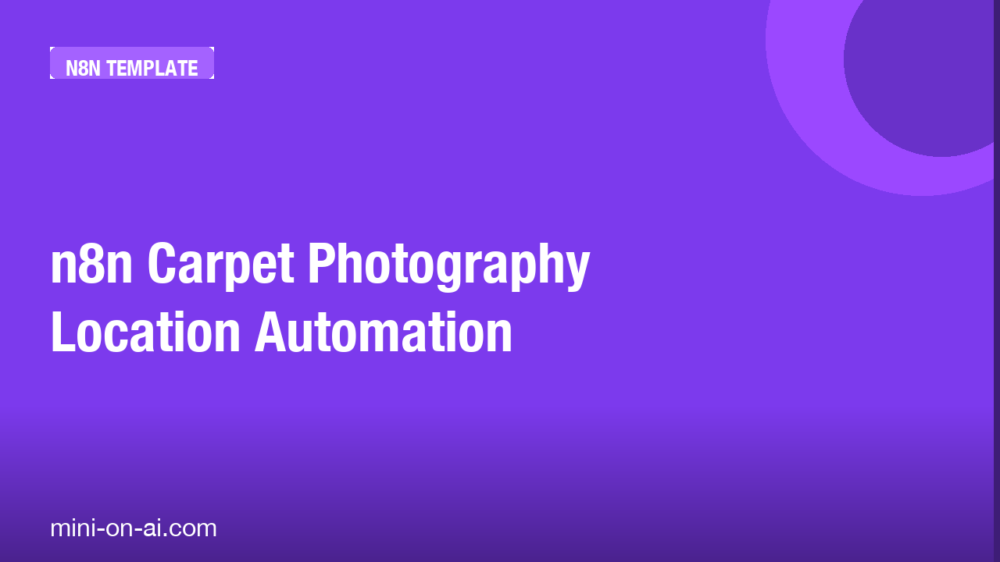

n8n Carpet Photography Location Automation
A ready-to-use n8n workflow that automates the process of matching photographed carpets to suitable real-world locations using AI vision analysis, eliminating manual Gemini + Photoshop work.
9-node workflow
Get it free →
You've been manually running carpet photos through Gemini, then spending 20 minutes in Photoshop finding the right setting. There's a faster way.
WHO THIS IS FOR
— Interior photographers who stage carpets for client presentations
— E-commerce teams producing carpet lifestyle imagery at volume
— Freelancers tired of repeating the same AI-assisted location-matching process by hand
WHAT'S INSIDE
— A 9-node n8n workflow that handles image intake, AI vision analysis, and location matching in one automated run
— Importable JSON file — drop it into your n8n instance and go
— Step-by-step setup guide so you're running in under 30 minutes, not troubleshooting for hours
— A repeatable process you can hand off or scale without rebuilding anything
This replaces a repetitive manual workflow with something that runs itself.
Download and use it today.
Discover more tools like this at mini-on-ai.com